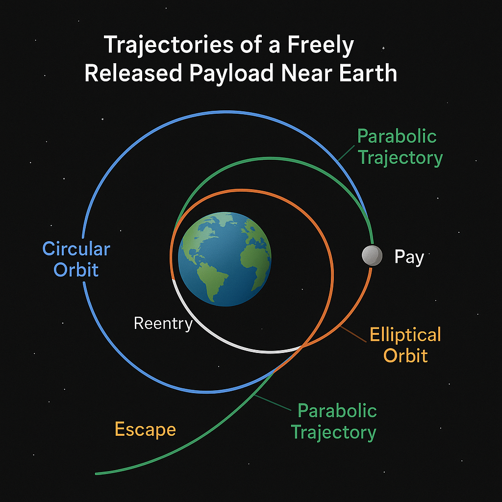

Problem 3
🌍 Trajectories of a Freely Released Payload Near Earth

📌 Motivation
When a spacecraft releases a payload near Earth, the path it follows depends on:
- Its initial position and speed
- The direction of motion
- The gravitational pull of Earth
Understanding these paths helps in planning:
- Satellite orbits
- Reentry to Earth
- Escaping Earth's gravity for deep space travel
🧠 Key Concepts
1. Newton's Law of Universal Gravitation
Every object attracts every other object with a force:
\[
F = \frac{G \cdot M \cdot m}{r^2}
\]
Where:
- \( F \) is the gravitational force
- \( G \) is the gravitational constant
- \( M \) is the mass of Earth
- \( m \) is the mass of the payload
- \( r \) is the distance from the center of Earth
This force always pulls toward the center of Earth.
2. Kinetic and Potential Energy
A payload has two key types of energy:
-
Kinetic Energy (moving):
[ KE = \frac{1}{2}mv^2 ] -
Gravitational Potential Energy:
[ PE = -\frac{G M m}{r} ]
The total energy determines the shape of the trajectory.
🚀 Types of Trajectories
🌐 Circular Orbit
- Speed is just right to balance gravity
- Path is a circle
- Total energy is constant and negative
🔁 Elliptical Orbit
- Speed is not perfectly balanced
- Payload moves closer and farther from Earth
- Total energy is still negative
🪃 Parabolic Trajectory
- Speed is just enough to escape Earth
- Total energy is zero
- It’s a boundary between orbit and escape
🛫 Hyperbolic Trajectory
- Speed is greater than needed to escape
- Payload leaves Earth forever
- Total energy is positive
🧮 Escape Velocity
The speed needed to leave Earth without falling back:
\[
v_{escape} = \sqrt{\frac{2GM}{r}}
\]
At sea level:
\[
v_{escape} \approx 11.2 \text{ km/s}
\]
🔢 Numerical Simulation (Concept)
To simulate motion step-by-step:
- Set the initial position and velocity of the payload.
- At each time step:
- Compute the gravitational force: [ F = \frac{G M m}{r^2} ]
- Calculate acceleration:
[ a = \frac{F}{m} ] - Update velocity:
[ v_{new} = v + a \cdot \Delta t ] - Update position:
[ r_{new} = r + v \cdot \Delta t ]
- Repeat to track the trajectory shape (circular, elliptical, parabolic, hyperbolic)
📊 Visualization Goals
- A plot of Earth and the payload path
- Comparison of multiple initial speeds
- Labels for escape, reentry, and orbit scenarios
🌌 Real-World Applications
- Satellites must be released into elliptical or circular orbits
- Spacecraft aiming for other planets use hyperbolic trajectories
- Reentry capsules follow elliptical or parabolic paths
✅ Summary
| Condition | Trajectory Type | Total Energy |
|---|---|---|
| Low speed | Elliptical orbit | Negative |
| Just right speed | Circular orbit | Negative |
| Exactly escape speed | Parabolic path | Zero |
| Greater than escape speed | Hyperbolic path | Positive |